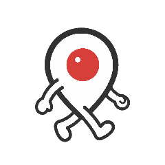
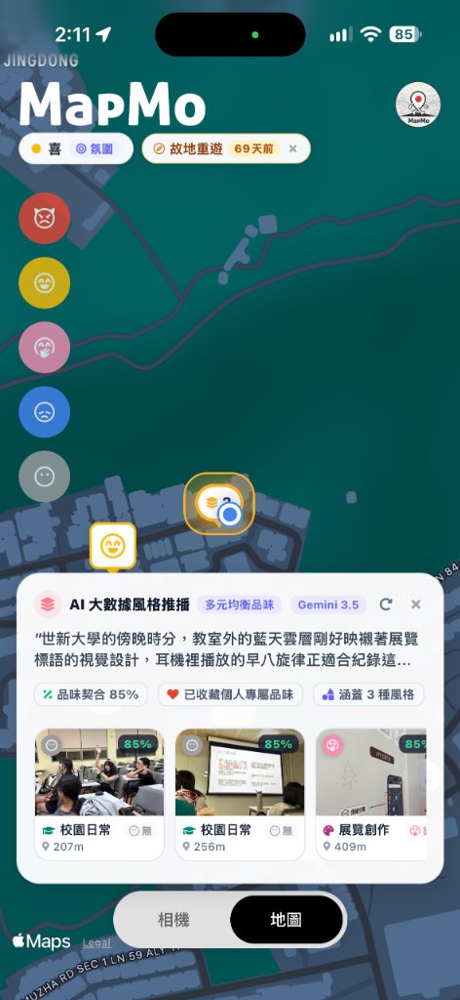
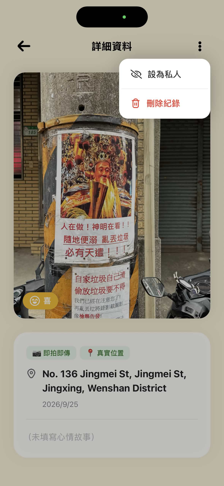
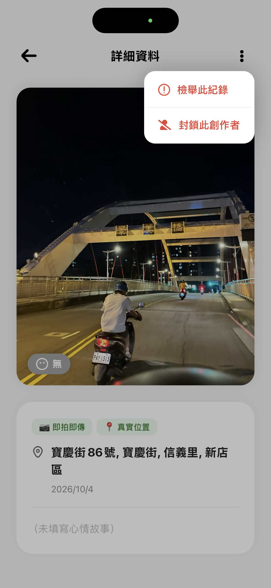
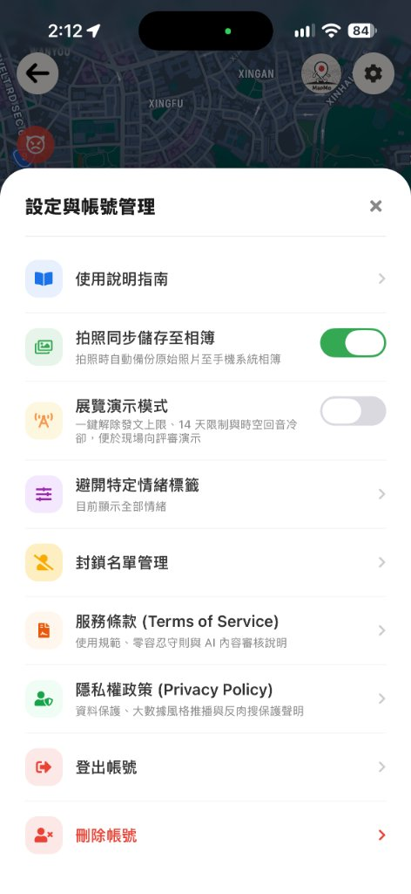
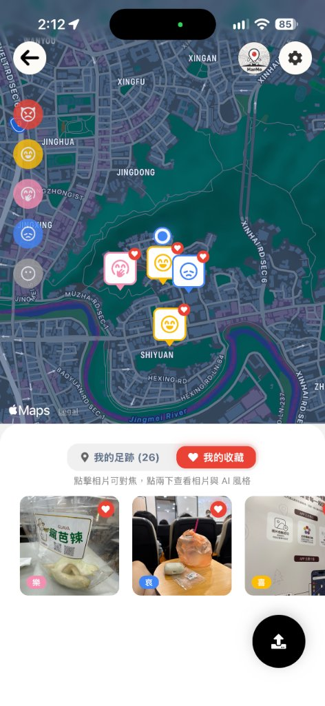

16 大風格向量
AI 大數據風格品味推播
結合你的 ❤️ 收藏與公開貼文，以 Cosine 相似度＋畫面關鍵字計算審美契合度（例如「校園日常 85%」）並附上透明理由；嚴格「對風格不對個人」，徹底反肉搜。

每一個感受，都值得被好好放置。MapMo 帶你探索地圖與情緒對應的創新體驗。





不只保留零壓力匿名初衷，更加入 AI 視覺品味運算、1KM 街區氛圍感應與時空重遊體驗。
結合你的 ❤️ 收藏與公開貼文，以 Cosine 相似度＋畫面關鍵字計算審美契合度（例如「校園日常 85%」）並附上透明理由；嚴格「對風格不對個人」，徹底反肉搜。
頂部「街區・氛圍」微膠囊即時統計生活圈（1 公里半徑）匿名情緒色譜與主調比例，讓你一秒感知身邊城市的集體心情脈動，並自動移除精確門牌保護隱私。
以正式帳號重返自己 7 天前曾親手留下的足跡 80 公尺內，地圖上方將喚醒「故地重遊」微膠囊（具 24 小時貼心冷卻），亦可在設定開啟「展覽演示模式」零障礙展示。
熱門商圈或校園展覽聚集大量足跡時，自動收合為數字徽章避免標點互蓋；一指點開底部抽屜即可滑動翻閱每張回憶，並直接依 5 種情緒二次篩選。
拍照介面配備 1.0x~5.0x 弧形刻度變焦轉盤，快門 0.01 秒鎖定 GPS 加蓋不可後製「即拍即傳」綠標；上傳成功還會獲得帶時空戳記的專屬拍立得回憶卡。
結合上傳前圖文審查與檢舉雲端影像仲裁（附人工斷路器不誤殺）；同時可在個人設定勾選「避開特定情緒標籤」，或透過 ❤️ 收藏管理自己的純淨品味相簿。
點選任一手機畫面，開啟高清放大檢視（支援鍵盤左右切換與 Esc 關閉）